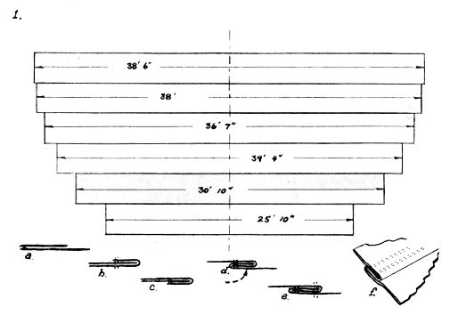
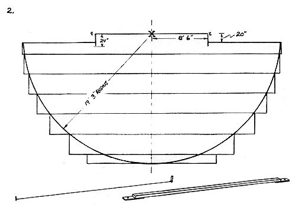
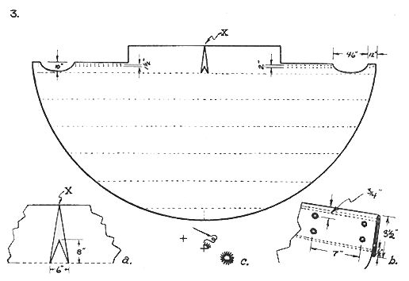
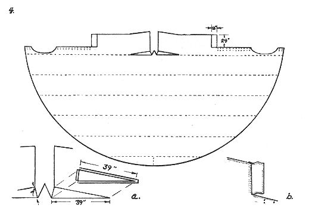
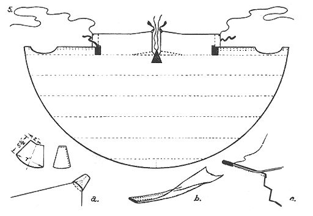
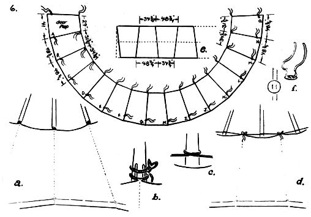
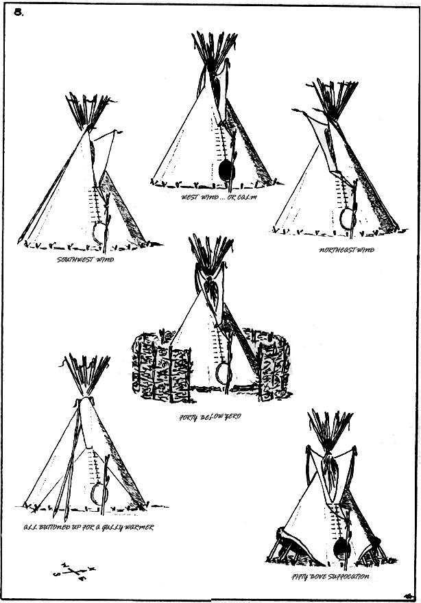

"There were 50 tents made of tanned hides, very bright red and white in color and bell-shaped, with flaps and openings, and built as skillfully as those of Italy, and so large that in the most ordinary ones four different mattresses and beds were easily accommodated. The Indians … are as well sheltered in their tents as they could be in any house. " -From Don Juan de Oate's account of a 1599 Great Plains expedition
"Tazhebute came to join us with a good Indian tent . . . Those tents have no equal for camping purposes. They shed the rain well, and in cold weather one can build afire right in the center of them, with the smoke rising cleanly up out of the top, where the flaps are set to suit the way of the wind." -Thomas Henry Tibbles, describing an 1881 trip among the Ponca Indians in his book, Buckskin and Blanket Days
"Ye kin live in it forty below zero and fifty 'bove suffocation an' still be happy. It's the changeablest kind of a layout for livin' in." - Caleb Clark, The Old Trapper, in Ernest Thompson Seton's Two Little Savages, 1903
"It's a whole new experience. It's like living inside and outside both at once. During the day - even on dark days - a tipi has a mellow, even illumination that's never been equalled in a house. When it rains, you're right out in it, yet protected. You're right there, but warm and dry, too. And at night, wow. It's a groove to watch the fire making shadows on the wall and - later - maybe wake up to see the moon or some stars shining down through the poles in the smoke hole. Fantastic.
"I once heard Buckminster Fuller tell how he wanted to build a double-walled geodesic dome house for movie director John Houston and Fuller's basic idea was that living in the place would be a natural inside-outside thing. But it's already been done. The Indians were way ahead." -A back-to-the-land tipi dweller, 1969
For over 400 years, knowledgeable people have agreed that the Plains Indian tipi is absolutely the finest of all movable shelters. To the Indian - whose concept of life and religion was broader, deeper, richer and infinitely more unified than that of his white conqueror - the tipi was much more: Both home and church . . . a sacred place of Being and sharing with family, friends, Nature and Man-Above.
Unfortunately, the white man - with a fragmented and neatly compartmented view of existence - found the All-encompassing Indian way literally "beyond understanding" and, therefore, of no consequence. This high-handed and naive judgment extended, of course, to the lodges of the Plains Indians.
"We could not only move our houses but could move entire villages, and we often did. In this respect we were better off than the white man is. We moved to suit the seasons, in summer or in winter; we moved to be near a good supply of wood and water, or for fresh pasture for our ponies."
THE ARAPAHO WAY
Althea Bass
"The Sioux and Cheyennes used a three-pole tripod foundation, with one pole being placed so as to support the right side of the door, thus projecting slightly lower than the others at the rear. The other poles were then piled around this foundation. The Crows used a four-pole foundation, the apex of which could be easily noted below the apex of the remainder of the poles."
THE FRONTIER YEARS
Brown and Felton
"The poles, necessary for the construction of these movable dwellings, are not to be found in any part of the country of the Kaskalas, but are purchased from the Indians of Missouri, or others inhabiting countries more plentifully supplied with timber. We are Informed by Bijeau, that five of these poles are, among the Bad-hearts, equal in value to a horse."
Major Stephen H. Long
1819-1820 Expedition
"The tanning is so fine that although it should rain bucketfuls, it will not pass through nor stiffen the hide, but rather upon drying it remains as soft and pliable as before."
Don Juan de Oate
In the "either-or" white mind, the tipi was flimsy and primitive when compared to a solid, substantial frame building. The fact that a tipi was bright, open, airy, warm, dry and easily transported over (and, therefore, a part of) all outdoors while the frame structure was - and largely remains - closed in, dark, poorly ventilated and rather pathetically rooted to one spot was completely beside the point to this schizoid way of thinking.
Luckily, our "civilized" appraisal of the Indian way is now going through some changes and that more reverent life style is increasingly understood and embraced by the new Gentle People. As one result of this trend, the tipi - so much a part of Plains Indian life - is enjoying a sudden popularity.
The tipi is not the final answer for everyone, of course (even the Plains Indians built other structures), but it remains - time, money and labor vs. comfort, utility and versatility - probably the world's most efficient shelter. If you've ever wanted one for camping, semi-permanent or even permanent living, here's how to make it happen:
TIPI DESIGN
There are two basic Plains Indian tipis: One uses three foundation poles and the other has four. Our plans are for the three pole design which is simpler, stronger and - in general - superior to the four pole model. The dimensions given here are largely taken from the Sioux tipi pattern presented by Reginald and Gladys Laubin in their University Of Oklahoma Press book, THE INDIAN TIPI.
Just to get it straight right in front, the Laubin book is the authoritive work on the Indian tipi and contains a wealth of information on the construction, tradition and lore of the tipi that you won't find here or anywhere else. We're going to give you detailed instructions on making, pitching and living in a tipi . . .but if you really want to learn about this shelter, you've got to read THE INDIAN TIPI.
THE POLES
Indian tipis varied from slightly less than 10 feet in diameter, for hunting expeditions, to permanent lodges with a diameter of more than 30 feet. The larger structures naturally required more and longer poles than the smaller ones. We've compromised on a tent diameter of approximately 18'6" (roomy but easily transported by car) and - for this size - you'll need 17 poles about 25 feet long.
The fifteen poles used in the frame should be three or four inches thick at the butt and two inches through where they cross and tie. The two smoke flap poles need be no thicker than two inches at the butt. The best poles always come from a young, crowded stand where each tree has grown tall and slim reaching for the sun.
Red and white cedar make exceptionally light, strong supports which were prized by some tribes. Lodge-pale pine (guess how it got its name) and western yellow pine are both heavier but still make good tipi supports. If none of these are available; use the best timber you can find for the job or buy some fast quality 2X4's, rip them lengthwise on a taper and round the corners with a draw knife or joiner.
If you do find some suitable timber, cut the trees early in the spring (remember, when selecting, to allow for removal of bark and shrinkage) and trim off all knots and branches "up the tree" with an axe or chainsaw.
Lay each pole across two sawhorses (small blocks nailed to the horses 4" apart will keep the poles from tuning) and - starting at the butt - straddle the pole and peel it with a sharp draw knife. Season the peeled poles by laying them flat across pieces of scrap lumber spaced two feet apart on a patch of open ground. L et the pores air and sun cure for three to four weeks. Turn them regularly so they'll season out straight and true.
The Laubins recommend a good application of pentachloraphenol, log oil or floor hardener to preserve and protect the finished poles. If you're on the non-chemical trip, you may prefer to let the wood age naturally . . . or compromise on a couple coats of linseed oil rubbed in.
THE COVER
A properly tanned hide tipi cover was a beautiful creamy white and you're going to want a white, pearl grey, yellow or other bright canvas for your cover. The colored canvas - blue, green, brown and olive drab - so dear to the hearts of most tent makers is not at all traditional and will make your finished tipi dark and dreary inside. The coated "modem" fabrics also shut out too much light and the Laubins have found that muslin exposed directly to the sun has a short life. So a light colored, light weight canvas it is.
If you can obtain an 8 or 10 oz. duck canvas in 72" width, you'll save some work and your tipi will have fewer seams. It's hard to find canvas that wide, however, so we're basing our design on a fabric of 36" width.
"I seen a bunch of squaws make [a tipi] oncet. First they sewed the skins together. No, first thar was a lot o' prayin'; ye kin suit yerselves; 'bout that - then they sewed the skins together an' pegged it down flat on the prairie." Caleb Clark "[The squaws] put in a peg at the middle of one side. Then with a burnt stick an' a coord - yes, there must 'a' been a coord - they drawed a half circle - so." Caleb Clark ". . . and there is rows o' holes down - on each side fur the lacin' pins." C aleb Clark
Shop around. I priced waterproofed 8 oz. duck from $1.10 to $1.75 and 10 oz. at $1.25 to $2.00 a running yard in Cleveland while writing this article. I believe I could have found lower prices if I had really gotten into it . . . so use the old purchasing. agent's rule of thumb: Always get at least three quotes before making any major purchase.
[1] Cut six pieces of 36" wide, 8 or 10 oz. canvas (8 oz. is much easier to work, makes a lighter tipi and is less expensive) 38'6", 38', 36'7", 34'4", 30'10" and 25'10" long.
Find the center of each piece and spread out the canvas as shown in Figure 1. The strips should be laid together like shingles on a roof so water will run off, rather than under, the seams.
A flat seam, like dressmakers use on a shirt, is recommended for sewing the strips together. If you intend to "farm out" this part of the job, try to find a tent maker who will use flat seams. I'm sure there's a better way . . . but here's a method we worked out for sewing such seams:
(a) If your canvas is 36" wide (37", counting selvage), lay two strips together with what will be the inside surfaces of the fabric touching and outside surfaces away from each other. The strip that is longest (and will later end up on top) should be on the bottom and extending three-quarters of an inch.
(b) Turn the allowance edge evenly up over the edge of the top strip and sew. A double stitch is highly recommended.
(c) Flop the two pieces of canvas over and . . .
(d) . . . swing the strip which is now on the bottom through until it is an extension of the new top strip.
(e) Run another row of double stitches down the lower edge of the seam.
The finished flat seam will look like Detail f on Figure 1.
[2] When all six strips are sewed together, lay the cover out flat again and locate the center of the upper (longest) strip. Measure down 20 inches from the top edge of this strip and out 8'6" in both directions from its center line. Cut off and remove the 20" by approximately 10'9" rectangles from the two upper corners of the strip.
Note that the cut made perpendicular to the edge of the canvas is extended to a depth of 24" even though the piece removed is only 20" deep. The extra four inches will later be turned under for a hem.
Sew the two removed panels into one strip. Center and attach this long narrow piece to the bottom of the 25'10" strip. This will extend the whole canvas enough to allow you to chalk and cut a 19'3" radius from the center of the top edge of the tipi cover.
Set a peg at point "X" and swing your chalk on a length of cord that will not stretch. You can also drill a hole for the peg in a board or piece of plywood, drill a second hole for the chalk in another and nail the two sections to a 2X4 so that the holes are the proper distance apart.
The selvage on tent canvas - unlike the selvage on most other fabrics - is not cut off and removed. This means that your 36" wide material is actually 37" wide. The pattern we are using was designed to give you the most tipi from the least material and - if your six seams across the cover are one half to three-quarters of an inch wide - the 19' 3" radius will not run off the bottom edge of the pieced-together fabric. If the radius does run off the bottom, don't worry. Just cut another scrap and piece out the bottom center a little further . . . or pull in the string and make the radius 19'1" or 19'2". You'll never notice the slight difference in final tipi size.
[3] Directly below "X", on the first seam, measure 3" each way from the center line (total of 6") for the base of the tie flap. Cut from these points straight out to Point X. Trim and hem the resulting long, narrow triangle (6" by 24") to a flap 6" wide by 8" long as shown in Detail 3a.
The four inches (difference between 20" and 24") allowed when the corner panels were removed from the top of the cover can be turned down and pinned while a half oval is cut from each side of what will become the tipi's front. The half ovals will later form the door of the shelter and each cut should finish out, after hemming, approximately 46" long by 10" deep and be located 12" in from the cover's outside radius.
The four inches down each side of the tipi's front can be permanently turned and hemmed before or after the door halves are cut and finished out. If you are - or can procure the services of - a good seamstress, you may want to put a facing around the door ovals and then hem the front edges. When you do sew this hem, be sure to make it only 3 1/2" wide with the extra 1/2" turned under again (Detail 3b) so no raw edge is left exposed.
After the 3 1/2" hem is finished . . . lay out, cut and stitch in the lacing pin holes below the door opening and between the door and the base of the smoke flaps.
The holes on the left side start 3/4" from the hemmed door and the two rows are spaced 1 1/2" apart with the outside row set 3/4" from the edge. Use the same edge distance for the holes on the right side, but space the two rows 2" apart. The 1/2" difference will make lacing pin insertion considerably easier and neater when the right side is lapped over the left.
The Laubins recommend a vertical spacing of 7" between each set of holes although - if you like a lot of tedious hand work - you can space them as close as 4". Note that it is not necessary to run the holes all the way to the base of the smoke flaps. Tie tapes, added later, will be better than lacing pins for closing that space.
"Thar's a upside down pocket in the top side corner o' each smoke flap
Caleb Clark
"Then at the top of that pint ye fasten a short lash-rope."
Caleb Clark
To make each hole, cut a little cross with quarter inch arms in the canvas and buttonstitch around it with No. 10 unbleached shoemaker's thread coated with beeswax (3c). If done properly, this will make a 3/8" diameter, self-reinforced round hole and no grommets will be needed.
[4] The top horizontal piecing seam is now opened for 39" on each side of the 6" base of the tie flap. A gore of 39"x39"x7" finished size (with one inch added all around for seams) is sewed into each opening (4a). Flat seams, again, are best and you'll probably prefer to sew in these gores by hand.
The Laubins rightly claim that all other popular writers on the tipi have overlooked these gores which so greatly help the finished cover fit around the tipi poles. Other authors, such as Seton, show the flaps cut wider at the top . . . but that's not the same thing at all. The Laubins deserve full credit, to my knowledge, for bringing this important detail to light.
An 8" by 24" (final size) extension is now added to the base of each smoke flap (4b). These 8" extensions are more authentically Cheyenne than Sioux. The Sioux only occasionally added extensions of - usually - no more than 4". This slight deviation from a strictly Sioux pattern really helps to "weathertight" a tipi during heavy storms, however, and is a worthwhile addition. Again, allow for hemming the flaps and sewing them on with a flat seam.
[5] Some pole pockets, cords and reinforcing added to the smoke flaps will now complete the tipi cover. For each pole pocket, cut two or three thicknesses of canvas, sew as shown in Detail 5a and attach firmly to the upper corner of the smoke flap. A switch of human or horse hair fastened to the tip of the pocket makes a traditional decoration.
Sew two tapes, each three feet long, to the tie flap and an 18 inch long tie tape to the base of each smoke flap. The tapes are made by folding together a 3" wide strip of canvas into a triple-thick one inch wide band that is double stitched down both sides (5b).
Note that the tape on the base of the left smoke flap is sewed to the top side of the hem and the right smoke flap's tape is placed on the under side of the hem. This is not a mistake. When the cover is in position with the right side lapped over the left, the tapes - so mounted - will be properly positioned for easiest tying.
Buttonhole stitch a small hole in the lower corner of each smoke flap and attach a 3/16" cord 16 feet long.
The crosshatching on Figure 5 indicates four layers of reinforcing stitched by hand to the under side of the cover in the areas of main stress. This reinforcing is essential.
As a final reinforcement, you can-if you choose-sew a length of 3/16" cord around the tie flap and along the top edge of the smoke flaps. Use the same shoemaker's thread you used for the buttonhole stitching and sew over and over as shown in Detail 5c.
It is not necessary to hem the bottom of the tipi since the cloth - cut on a bias - will not ravel. This again is traditional as the Indians themselves seldom hem their tipi bottoms.
THE LINER
The tipi cover is now complete but, if you were to stretch it over a set of poles and peg the bottom down, you'd find the resulting shelter no more comfortable than the average white man's tent. Wind would blow in at the bottom, rain run down the poles and drip on everyone and everything, smoke from an inside fire fill the structure under most conditions and moisture condense inside on every cool night. The tipi would be hot in summer, cold in winter, dirty, drafty and damp: In short, it would be unsuitable for camping and unfit to live in for extended periods . . . just like most white man's tents.
One simple modification - the addition of a liner - changes all that, however. With a liner and a little common sense, the Plains Indian tipi becomes warm and snug in winter and cool and dry in summer. A fire built in the center draws properly and dew no longer condenses inside. There's no draft, no dampness and no more dirt in the living area than in the average summer cottage. A liner, in other words, almost magically transforms the tipi from a tent . . . into a home.
The liner-which might be described as "a tipi without a top within a tipi" - is very easy to make and Figure 6 gives all the basic information you'll need.
Fifteen identical tapered panels - each six feet long, 34 1/4" wide at the top and 48 3/4" across the bottom - will be needed to make your liner. The panels can be made from any lightweight material butperhaps surprisingly - it is more important that the finished liner be waterproof than that the tipi cover itself be so treated.
Since it will not be exposed directly to the sun, the Laubins recommend using heavy bleached muslin here and treating the finished liner with a wax compound. Balancing tradition and reasonable cost against other considerations, that seems a good way to go although some of the newer coated fabrics should be very attractive to folks with a healthier pocketbook. GERRY'S and HOLUBAR in Boulder, Colorado, THE SKI HUT in Berkeley, California and RECREATIONAL EQUIPMENT in Seattle, Washington are a few of the specialized outfitters that can supply the more modern materials. There's nothing wrong with 8 oz. duck canvas, either.
"In the winter, our villages stood on low, sheltered ground near the river, where the wind and cold could not reach us; in summer they were moved to higher ground where they could catch the cool winds."
THE ARAPAHO WAY
Althea Bass
"No tent is so sturdy against wind and weather as a good tip[-the tilted cone with its back toward the prevailing storm winds, braced by the long slope of the forward poles; the weight of the poles themselves with their pointed butts piercing the earth; the taut conical cover offering no hold to the wind, no pockets or folds to catch water; the anchor rope taut from the apex to the ground Inside the tent; the pegs pinning the cover firmly to the ground-all these things make the tipi a strong, dependable protection."
THE INDIAN TIPI
The Laubins
"Now, when ye set her up ye tie three poles together-so-an' set 'em up first, then lean the other poles around, except one, an' lash them by carrying the rope around a few times."
Caleb Clark
If you can't obtain the muslin or other fabric in a 72" width, 36" material sewed together with a flat seam will work quite well.
Cut the panels (reversing every other one to save material, as shown in Detail 6e), seam them together and hem the top and bottom of the liner. If you rough cut all 15 sections 34 1/2 to 35" across the top and 48 1/2 to 49" at the bottom, the finished liner should go completely around the inside and lap generously . . . depending upon how the poles are placed, how tightly the liner is tied, etc.
The Laubins - who have lived months or years in a tipi to my days in these shelters - have refined their liner design as noted in Figure 6. They recommend cutting only 12 of the 15 panels (C through N) to the full 34 3/4 " top and 48 3/4" bottom dimensions. Sections "B" and "O", they say, should measure just 31 3/4" across the top and "A" - for the door - should be cut 29" across the top and 41" at the bottom for a neater fit.
A double 3/16" cord and reinforcing patch added across (Detail 6f) - or tie tape sewed into - the top and bottom of each vertical seam will complete the liner. If you use cord for these ties, it can also be fastened to the fabric in the traditional string-around-a-pebble manner shown for attaching peg loops. See the center detail on Figure 7. This may be the best way of all because of the flexibility of locating the ties and the ease with which they may be changed . . . another example of the sophistication and practicality of the Indians' seemingly primitive methods.
Make each free end of the ties 24 to 30 inches long. Note that the lower set of cords is located 6-8 inches from the liner's bottom edge and the last bottom tie on section "O" is set in from the outside vertical edge. This allows the bottom of the liner to be turned in all the way around and the meeting ends to lap. You'll find it easier to locate that last tie on "O" after the liner is hung for the first time.
Some tipi owners prefer to tie the liner directly to the poles (Details 6a-b) but if you do, remember to insert two little twigs under each tie on the inside of the supports. This allows stray trickles running down the support to keep right on going instead of dripping off at the tie point.
Details 6c-d show another drip-free method of hanging the liner. A quarter inch rope is stretched tightly from pole to pole and wrapped around each support so that it runs inside, rather than next, to the cover. The liner is then tied to the mid-point of each span of the rope.
The base of the lining is tied to the butts of the tipi poles, to the pegs used to hold down the cover or - occasionally - to a separate set of pegs.
PITCHING THE TIPI
Since the prevailing winds on the Plains are from the west and southwest, the tipi - with only a few exceptions - was always pitched facing east and the following directions are for pitching one that way.
Look for a well drained, smooth, level area and remove all roots, stones, etc. Although a tipi can be comfortable in the broiling sun, you can pitch yours to the northeast of a tree or trees in the summer for late morning to evening shade, if you wish. Don't locate directly under trees because they can be dangerous during storms and drip for hours after a rain.
You'll notice, if you refer to the upper right corner of Figure 7, that the floor plan of a properly pitched tipi is oval or egg shaped, rather than round. The tipi cone is also tilted and steeper up the back than the front. This is a main secret of the tent's comfort.
If the tipi were an evenly balanced cone, the smoke vent would center around the poles where they cross and would be too large to close completely during a rain. By changing the floor plan and tilting the cone, the Indians were able to extend the smoke hole down the elongated front of the tent. This placed the crossing of the poles at the top of the smoke hole instead of in the middle and allowed the opening to be easily closed with the protruding flaps. It also moves the fire slightly toward the front of the tipi, which makes more efficient use of the tent's interior.
Pick out the four heaviest poles. Three will be used for the foundation tripod and the fourth will be the lifting pole. Spread out the tipi cover and use it to measure the tripod poles as shown in the upper left corner of Figure 7. Note that, since the finished cover is not a true half-circle, this method automatically and correctly locates the tripod tie point lower on poles N and S than on pole D (remember, it's a tilted cone).
Good tipi poles are sharpened on each end. If you intend to plant the butts of the tripod poles a few inches in the ground (as some, but not all, Indians did), allow for that right now and mark the three supports where they cross so you won't have to remeasure every time you erect the tent.
Using one end of a 45 foot length of 1/2" rope, tie the three poles with a clove hitch as illustrated, wrap the rope around the poles three or four times and finish with two half hitches.
Put the butts of poles S and D about where they'll be in the pitched tipi and, while someone holds taut the loose end of the 1/2" rope, raise the tripod by walking up under the ends of S and N. When the poles are almost vertical, swing the butt of N across to it's approximate final position. This locks the tripod and gives it a twisted dog-chasing-its-tail appearance where the poles cross and are tied.
. . . the long rope that binds the poles is carried down under, and fastened tight to a stake that serves for anchor . . . "
Caleb Clark
"Now tie the top o' the cover to the top o' the last pole by the short lash-rope, hist the pole into place - that hists the cover, too, ye see an' ye swing it round with the smokepoles an' fasten the two edges together with the wooden pins."
Caleb Clark
"The opening that made the entrance was covered with a skin or a length of canvas held down by a strip of wood that weighted the bottom. This was the only kind of door we knew, long ago. In fine weather it was raised on poles to make a kind of awning over the opening."
THE ARAPAHO WAY
Althea Bass
"Wall, some jest lets the edges sag together, but the best teepees has a door made of the same stuff as the cover put tight on a saplin' frame an' swung from a lacin' pin."
Caleb Clark
"Real hot weather the thing looks like a spider with skirts on and held high... "
Caleb Clark
"in winter, there were windbreaks to shelter our lodges. The women went to the river in the fall and cut a kind of tall grass ...The women bound this grass into panels and set them up like a stockade fence outside our tipis, to shut out the wind and the snow. Then they pegged down the lodge cloth and laid sod or earth over it to seal it. When that was done, we were snug for the winter, however stormy it might be outside."
THE ARAPAHO WAY
Althea Bass
"There was room for everything in our lodge, and to us it never seemed crowded. Bags of meat and fruit that my mother had dried hung from the lodge poles, out of our way; and around the outer circle of the room, In the space where the beds were and underneath them, folded robes and clothing, our toys, and our mother's tools and materials for handwork were kept."
THE ARAPAHO WAY
Althea Bass
As nearly as possible (it'll be pure trial and error the first time), position the poles exactly as they'll be when the tent is completely pitched. The two-and-a-half foot by two-and-a-half foot grid on one floor plan in Figure 7 will help. Note that this tipi measures 20 feet from front to back and 17'/2 feet across. Notice also, that the tipi's pole pattern is shifted just slightly off square around the perimeter clockwise.
Set the next eleven poles into place exactly in the order shown: 1,2,3 and 4 from the right, or north, side go into the front crotch first; 5,6,7 and 8 then stack into the front crotch from the left, or south, side and 9,10 and 11 are put into the back crotch last. Again, strictly follow this order and be sure to skip a place on the perimeter at "L" for the lifting pole. The pole pattern should now look like Figure 7's lower right drawing.
At this point, carry the 1/2" rope outside the frame at pole S and wrap it clockwise four times (the sacred Indian number) around the standing poles. Snap the rope tightly up into the area where the poles cross and bring it in over N. Angle a 2X2 peg three feet long into the tipi floor slightly behind center and snug the rope under it. It helps if the peg has a knob on top.
Lay the lifting pole down the center of the cover and mark it at the tip of the tie flap. Put the pole aside and fold the outside edges of the cover in to the center so that the lacing pin holes meet down the center line. Fold and refold both halves of the cover on themselves until each is a long triangle two feet wide at the base. Fold the two triangles together.
Put the lifting pole alongside the canvas, butt to the base of the bundle, and securely tie the tapes (wrapping them over and over the flap in a criss-cross) to the pole where previously marked.
Hoist the pole and canvas (you may need help), set the pole's butt into position and drop it into the last space in the rear crotch. Turn the pole as you lift it and let it fall so that the cover is always on top. If the cover fits too high or too low where the poles cross, swing the lifting pole back down and relocate the tie flap tapes.
Unroll the cover around each side of the frame to the front. Tie a pole (the one you'll later set in front of the tipi door) across supports D and F1 to stand on while you tie the smoke hole base tapes together and insert the top lacing pins. The cover should be slack enough to allow you to lap the south (left) over the north (right) side. Remove the cross bar as you button down the front of the tipi.
Insert the poles in the upside-down smoke flap pockets. Cut these poles just long enough to stretch the flaps tight when their butts cross or barely touch close against the back center line of the tent. Round the pole tips to protect the flap pockets.
Loosen the smoke flap poles so they just help hold the cover even and begin pushing the frame poles out against the cover. Do not push the poles out tightly until the cover is properly pegged down. . . but do space them out evenly to aid in locating the pegs. By the way, as soon as you're sure the tripod is placed correctly, set the three poles with a shovel . . . if you intend to set them.
The peg loops are 3/16" cord tied in a square knot around a 3/4" pebble six inches above the cover's lower edge. Tie the loose ends of the cord into another square knot, insert and twirl a peg to twist the cord tightly into a no-slip grip. Peg down the front, then the rear and - finally - both sides of the cover. Use a sledge and long iron rod to make lead holes for the pegs in hard or rocky soil.
Now push the poles tightly out against the cover (loosen the anchor rope for this, if you have to). For a permanent camp, plant all the tipi poles by loosening a few pegs, digging under a pole, twisting it into the ground, replacing the pegs and moving on around the circle. If you find the door pole is too long, as sometimes happens the first time a tipi is raised, plant it deeper or chop it off. If you chop it off, of course, it will cause no trouble next time.
Spacing the poles for the first time is the hardest part of pitching a tipi. Once you get them right, swing a cord off the center peg and measure the distance out to each one. Write the figures down and use them the next time you erect the tent. You'll also find that smoke from fires in the tipi will darken the cover everywhere but directly behind each pole . . . and you'll soon be able to line up the supports with the white stripes on the canvas. Once you've got `em, retie the anchor rope.
Set a 6 or 8 foot pole in front of the door to tie the smoke flap cords to . . . and your tipi is up. The door itself - a piece of canvas laced over a willow rod frame - is hung from the last lacing pin over the doorway.
A little study of Figure 8 will give you the basics of living year-round in your tipi. Set the smoke flaps quartering downwind under any given conditions and you should have little trouble making an inside fire draw properly. Stick up a brush windbreak and pile small logs around the bottom of the cover in the winter. This is nothing unusual for the Plains, you know: People there still stack bales of straw around the foundations of frame houses during the cold months. Roll up the tent's sides and take down the liner on still, hot summer days. And don't be too proud to cut a few boughs and lean them against the sunny side of the shelter on hot days when the wind is too gusty to raise the cover. It's all - just like sitting on the ground outside and reclining against the tent's slanting sides - fair use of the tipi.
Once the lining is hung inside and its bottom six inches turned in all around, robes, a waterproof tarp, oilcloth, burlap, old linoleum or a plywood floor can be put down inside and lapped over the liner's edge. Waterproof layers are really only needed under the beds and other items affected by dampness.
Ditch around the tipi to lead water away, make a couple of willow rod backrests, hollow out and line a fireplace circle with rocks and you're ready to dedicate your lodge. If you want to make sure the fire draws exceptionally well, you might dig a trench, remove the tops and bottoms from some tin cans and bury them in line to make a vent pipe leading from outside the tipi to the bottom of the fire pit.
So, hang your shield and other medicine articles from a pole behind the altar of your lodge and move in. Forget storm windows, leaky faucets, plugged eave troughs, water in the basement, sticking doors, cracked sinks, missing shingles, compound interest and forty year mortgages.
You're home.
TIPI MATERIALS
POLES:
15 poles 25 feet long, approximately 3-4 inches in diameter at the butt and 2 inches across at the tie point.
2 poles, somewhat shorter than above (cut to length during first pitching), 2 inches in diameter at butt.
COVER & DOOR:
70 yards of 8 or 10 oz. waterproofed duck canvas, 36 inches wide*.
LINING:
36 yards of 36-inch wide* muslin or 8-10 oz. duck canvas.
ROPE:
45 feet of 1 /2-inch Manilla rope (for anchor).
20 feet of 1 /4-inch rope is the alternate method of hanging liner is used.
CORD:
200 feet of 3/16-inch cotton cord.
10 feet of tie tapes (which you can make, or buy as "twill tape").
PEGS:
25-30 hardwood pegs (chokecherry or ash are best), 18 inches long and about 3/4-1 inch in diameter.
One or two anchor pegs 1 1 /2 to 2 inches in diameter and 30-36 inches long.
LACING PINS:
Eleven to fourteen pointed and seasoned hardwood sticks completely peeled except for the final 3-4 inches on the butt end. These pins should be 12-14 inches long and 3/8-inch in diameter. Dowel rods can be substituted.
WATERPROOFING:
If your fabric has not been waterproofed during manufacture, about 6 gallons of a chemical waterproofing
solution will be needed for the cover. Three gallons of a wax or chemical solution will also be used on the
liner. Allow about 5% for shrinkage of the fabric.
MISCELLANEOUS:
Thread, needles, paint (if you decorate the finished, use ordinary house paint or enamel applied to a damp - but not wet - canvas), streamers or swatches of hair to hang from pole tips and other odds and ends will vary from individual to individual. Read through the directions and make your own list.
*Other widths of material may be used if you refigure yardage.
TRANSPORTING THE TIPI
It's not hard to roll up a tipi cover and liner for transportation in a station wagon, car trunk, trailer or truck. Seventeen poles - 20 to 25 feet long and weighing a total of approximately 300 pounds - is a little different matter. But don't sweat it: The problem has been faced and solved before.
In the old days, before the Indians obtained horses from the white man, they simply limited their tipis to a size with poles small enough for a dog to drag. During the 1800's, when the tribes had plenty of horses (and a good horse could drag eight to ten poles), large tipis were transported throughout the Plains. As the buffalo were killed and the prairie fenced in, the Indians turned to wagons. Today, tipi poles are sometimes shipped from one place to another or carried on trucks, campers or cars.
Here's a rack the Laubins rigged up with the help of a Sioux blacksmith friend. With it, they can haul a complete tipi, of the size described in this article, on top of a small coupe.
About 29 feet of half-inch galvanized iron pipe, eight T-joints, two unions and four elbows were used in the basic rack with a 6 foot long 3/8" iron rod swung on a flat hinge from each side of the windshield as a brace. The bottom ends of the four uprights simply slide into sockets of 3/4" pipe fastened to the inside of the vertical sections on the front and back bumpers.
The only joker is the fact that the Laubins' car happened to be one of those sturdy old gentlemen of 1940ish vintage: You know, the kind with big, rugged, honest bumpers that really stick out in the breeze. If your automobile is one of today's sleek, streamlined monsters with the recessed, tinfoil articles front and rear, you'll obviously have to come up with another system . . . but the sketch should give you some ideas.
The Laubins load their tipi poles with butt ends forward and sticking over the front rack just a few inches. The long, slender top ends of the poles are allowed to protrude, maybe, 5-6 feet. This brings the tail end of the load just over the front of a small trailer they sometimes pull. If you make a rig like this and don't pull a trailer, remember to hang a red flag or two on the tips of the poles.
Cover, liner stakes and all the rest can be bundled up and carried on top of the "raft", if you like. Design your rack so the load just clears the car top and put some kind of a pad between the roof and the poles. Lash everything down securely.
|
|
 |
 |
|
 |
 |
 |
|
 |
|
 |
|
|
|
|